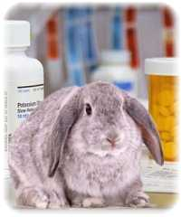

En Clínica Bremen disponemos de Farmacia Veterinaria con una amplia variedad de medicamentos y suplementos de uso exclusivo en animales, diferenciados según la especie (perros, gatos, conejos, etc.), garantizando que todo lo recetado por nuestros doctores está disponible en el momento que lo necesita.
Nuestros productos y servicios
Amplio stock diferenciado por especie animal, siempre bajo indicación médica.
Si el medicamento no está en stock, lo conseguimos en aproximadamente 2 días hábiles.
Alimentos especiales para mascotas con condiciones médicas como diabetes, enfermedades renales y más.
Amplia selección con distintas duraciones: tratamientos mensuales y trimestrales.
Asesoría médica personalizada
Lo que nos diferencia es que nuestra farmacia está respaldada por el criterio médico de nuestros veterinarios. Cuando usted visita nuestra farmacia, no solo compra un producto — recibe orientación profesional sobre qué es lo más adecuado para las necesidades específicas de su mascota y de su presupuesto.
- Recomendaciones por especie, raza, edad y condición de salud
- Explicación clara de posología y modo de administración
- Coordinación con el historial clínico si la mascota es paciente regular
Venga a visitarnos y gustosamente le asesoraremos con base médica y nuestra experiencia, en cuanto a lo que resulta más apropiado para su mascota.